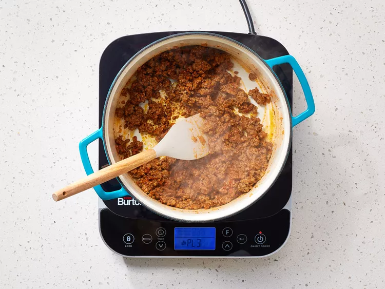

Homemade Hamburger Helper
This homemade hamburger helper is far better than the boxed mix. With fresh spices, and a hint of tomato, it's beefy, cheesy, savory, and has all the makings of a weeknight family favorite.

Prep Time: Cook Time: Total Time:
10 mins 25 mins 35 mins
Ingredients
- 1 pound 85% lean ground beef
- 1/2 cup diced yellow onion
- 2 tablespoons tomato paste
- 1 tablespoon ketchup
- 1/2 teaspoon garlic powder
- 1/2 teaspoon chili powder
- 1/2 teaspoon kosher salt
- 1/4 teaspoon paprika
- 1/4 teaspoon paprika
- 3 1/2 cups beef broth
- 1 cup elbow macaroni
- 6 ounces Cheddar cheese, shredded (about 1 1/2 cups)
Directions
Step 1
Gather all ingredients.
Step 2
Heat a large, heavy-bottomed pot over medium-high heat. Add beef and onion, and cook, stirring occasionally, until beef is crumbled, browned, and no longer pink, about 7 minutes. Spoon off and discard any fat.
Step 3
Stir in tomato paste, ketchup, garlic powder, chili powder, salt, paprika, and pepper; cook, stirring constantly, until fragrant, about 2 minutes.
Step 4
Add beef broth, and bring to a boil over high heat. Stir in macaroni; reduce heat to medium, and gently boil, uncovered, stirring occasionally, until pasta is tender and most of the liquid is absorbed, 13 to 15 minutes.
Step 5
Remove from heat, and stir in Cheddar, ensuring cheese is fully melted and incorporated, 30 to 45 seconds. Let stand until thickened before serving, about 2 minutes.